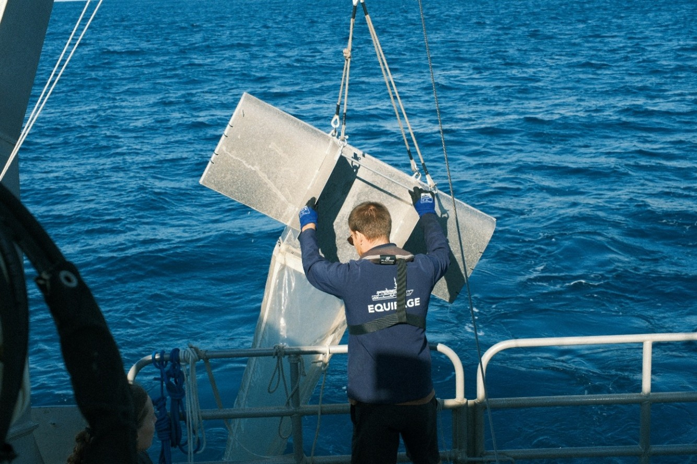

 Manta net | Sortie en merCourse: Measurements in biological oceanography |

| Programme | Master in Marine Sciences — Physical and Biogeochemical Oceanography |
|---|---|
| Description | This project was carried out as part of the "Measurements in Biological Oceanography" course within the Master 1 in Marine Sciences program at Aix-Marseille University. It is based on a series of six oceanographic day-trips conducted aboard the research vessel Antedon II at the SOMLIT Frioul station. The study aimed to correlate the physicochemical parameters of the water column with the dynamics of planktonic communities. By combining in situ measurements and laboratory analyses, we sought to better understand the functioning of this coastal ecosystem under the influence of seasonal environmental variations. The project is structured around the following axes of analysis:
|
| Documents | Report (PDF, 2.9 MB) |
| Gallery | Each link opens the full-size image (up to 630 kB).
|


Last updated: 11/06/2026